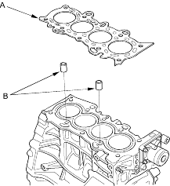
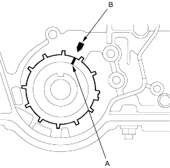

- Set the rocker arm assembly in place and loosely install the bolts. Make sure that the rocker arms are properly positioned on the valve stems.
- Tighten each bolt 2 turns at a time, in the sequence shown below to ensure that the rockers do not bind on the valves.
Specified torque:
8 mm bolts:20 Nm (2.0 kgf/m, 14 lbf/ft)
Apply engine oil to the bolt threads.
6 mm bolts:12 Nm (1.2 kgf/m, 8.7 lbf/ft)
Apply engine oil to the bolt threads.
6 mm bolts:(11), (12), (13), (14)

- Clean the cylinder head and block surface.
- Install the cylinder head gasket (A) and dowel pins (B) on the cylinder block. Always use a new cylinder head gasket.

- Set the crankshaft to TDC. Align the TDC mark (A) on the timing belt drive pulley with the pointer (B) on the oil pump.
